การใช้ Grid ใน Bootstrap
Post by Tanatporn Ngamkasaemsup, Feb 1, 2017.
Grid Bootsrap
Grid System คืออะไร ?
ถ้าพูดกันแบบบ้านๆ ทั่วไปเราก็คงจะบอกว่าเป็น Layout ที่คอยควบคุมวัตถุต่างๆ บนหน้าเว็บไซต์ให้แสดงผลได้อย่างถูกต้องตามหลัก box layout ซึ่งจะส่งผลดีต่อการเขียนหนึ่งหน้าเว็บไซต์ แต่สามารถใช้ร่วมกับอุปกรณ์ทุกขนาดหน้าจอ Grid system ของ Bootstrap
เอง แบ่งออกเป็น 12 คอลัมน์ ถ้าให้เห็นภาพง่ายขึ้นก็น่าจะต้องบอกว่า เหมือนกับตาราง 1 แถว มี 12 คอลัมน์ประมาณนั้น ดังภาพ
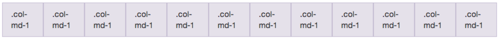
ซึ่งหน่วยที่เป็น 12 นี้ เราสามารถเฉลี่ยแต่ละส่วนได้ตามความต้องการ อย่างเช่น
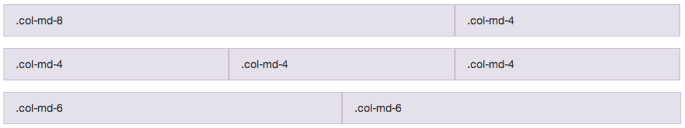
การสร้าง Grid บน Bootstrap
ขั้นตอนที่ 1 copy โฟลเดอร์ทั้งหมด และ ไฟล์ index.html ตอนที่สร้างใน Chapter 1 ทั้งหมดมาใส่โฟลเดอร์ใหม่ของเรา (ในที่นี้ตั้งชื่อโฟลเดอร์ว่า chapter_2) ดังรูป
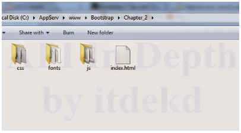
ขั้นตอนที่ 2 เปลี่ยน title ในไฟล์ index.html เป็น "Grid System" และลบแท็ก h1 ที่อยู่ใน body ออก โดยโค้ดผลลัพธ์ของไฟล์ index.html แสดงดังโค้ดด้านล่าง
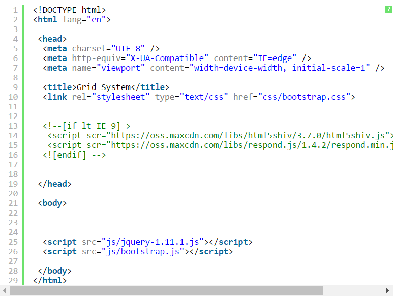
ขั้นตอนที่ 3 ในการสร้าง Grid system นั้น Bootstrap แนะนำให้เราสร้างแถวและคอลัมน์ไว้ใน container โดยคลาส container ของ Bootstrap แบ่งออกเป็น 2 ประเภท คือ container และ container-fluid สำหรับ container นั้นจะแสดงผลเนื้อหาตามที่เรากำหนดความกว้างของหน้าจอ
ส่วน container-fluid นั้นจะแสดงผลเนื้อหาเต็มความกว้างของหน้าจอของเรา โดยในที่นี้คือเราจะใช้คลาส container
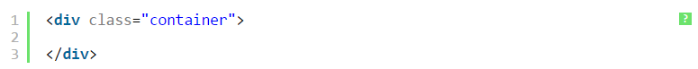
ถัดมาเราจะต้องสร้างแถวโดยใช้ class="row" ภายใต้ class="container" โดยเราสามารถที่จะสร้างแถวได้ไม่จำกัด แต่แถวเหล่านั้นต้องอยู่ภายใต้ class="container"
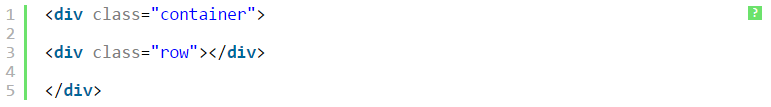
ขั้นตอนที่ 4ในแต่ละแถวของ Grid system นั้น Bootstrap ได้กำหนดให้สามารถที่คอลัมน์ในแต่ละแถวได้ 12 คอลัมน์ โดยคอลัมน์ของ Grid system แบ่งออกเป็น 4 ประเภทคือ - col-xs-int ใช้สำหรับการแสดงผลบนขนาดหน้าจอที่
< 768 px - col-sm-int ใช้สำหรับการแสดงผลบนขนาดหน้าจอที่>= 768 px - col-md-int ใช้สำหรับการแสดงผลบนขนาดหน้าจอที่ >= 992 px - col-lg-int ใช้สำหรับการแสดงผลบนขนาดหน้าจอที่ >= 1200 px โดยที่ "int" คือจำนวนคอลัมน์ที่เราต้องการแบ่งให้กับแต่ละเนื้อหา ตัวอย่างเช่น เราต้องการแสดงผล 2 คอลัมน์บนขนาดหน้าจอที่
>= 768 px เราสามารถทำได้โดยการเขียนโค้ดลงไปดังนี้
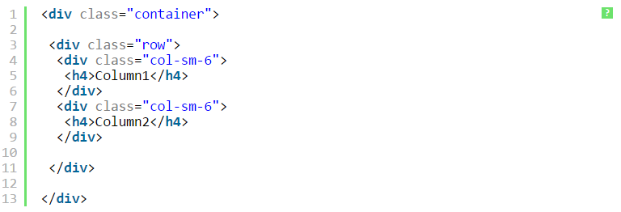
และผลลัพธ์ดังกล่าวแสดงดังรูป
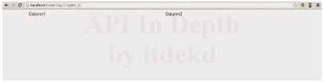
ขั้นตอนที่ 5นอกจากนี้เราสามารถกำหนดสีพิ้นหลังให้กับพื้นหลังในแต่ละคอลัมน์โดยใช้ CSS โดยให้เราสร้างไฟล์ styles.css ไว้ในโฟลเดอร์ "CSS"
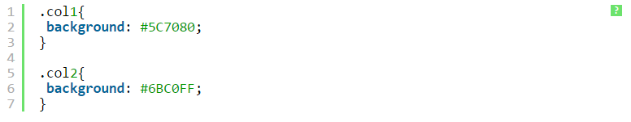
ถัดมาในไฟล์ index.html ให้เราเรียกไฟล์ css ของเราที่เพิ่งสร้างขึ้นมา
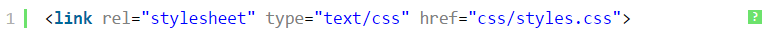
ต่อมาให้เรากำหนดคลาสของพื้นหลังให้กับแต่ละคอลัมน์ดังนี้
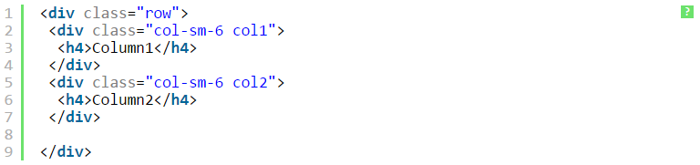
โดยผลลัพธ์ถูกแสดงดังรูป
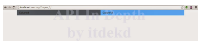
ขั้นตอนที่ 6 เราลองกำหนดการแสดงผลเนื้อหาบนมือถือและแท็บแล็บของเราบ้างนะครับ โดยส่วนขนาดหน้าจอของมือถือและแท็บแล็บจะมีความกว้าง
< 768 px ดังนั้นเราจำเป็นต้องใช้ class="col-xs" ซึ่งในตัวอย่างนี้เราจะให้แสดงผลแค่คอลัมน์เดียวบนอุปกรณ์ดังกล่าว
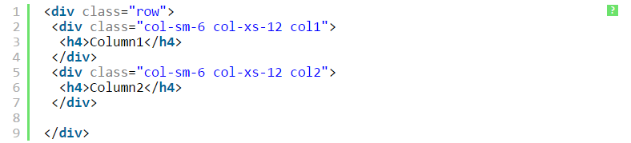
Leave a Comment: